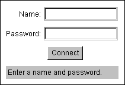

When you go to a page with a EwgieClient on it, you'll see a blank chat text area as pictured above. Above this area is a place to type the name you want to use in chat, and above that is a status bar that shows you the current time and what's going on. If you click on the time in the status bar, the display will toggle between the local time, the local date, and how long you've been within chat.
On the left-hand side of the status bar text indicating how many total people are connected to the server, how many people are in the particular room you're in, and the name of the room you're in.
To begin, simply type a nickname that you wish to call yourself in the name entry field. There are only a few rules to names:
- Names must be one word (they cannot contain tabs or spaces).
- Names cannot contain commas (commas are used for separating a list of names in some commands).
- Names can contain any other mixture of characters, uppercase and lowercase, but you should keep it simple so it's easy for others to type.
If you wish to change the font size of the text on the screen at any time, use the font size option menu to the right of the name entry field.
At this point, you can select the "Enter" button on the screen and connect to the server. After connecting, the server may display a short welcome message. You are now in the chat area!
The Ewgie client can also be started as a login dialog, which looks like this:

To enter chat, type your nickname into the "Name" field, press the return or enter key, type your password (if it is required on the server), press the return or enter key, then select the "Connect" button with your mouse or by pressing return or enter again.
A chat window will then appear that you can move around and resize outside of the browser. You can change the page the browser is currently in and you will not be disconnected. If the chat text area is embedded within the page, however, you will be disconnected if you leave the page.
Below the chat text area are a few buttons: an enter/leave button, which you can use to enter and leave chat, a "People/Rooms" button, which shows a control panel that you can use to get information on people and rooms, and a "Whiteboard" button that displays the whiteboard.
Basic Commands
Below the main text screen is an entry field which you use to talk to other people and send commands to the client and server. To talk to everyone else currently online, simply type in what you want to say and press the return or enter key.
The text you see on the screen that begins with asterisks ("***") indicates that this message is coming from the client or the server - it is machine-generated. Messages you see from other people start with their name, a greater-than sign, and a space, such as:
John> Hi there
This is a message from John, who typed "Hi there" to everyone. If you see a message starting with a name surrounded by asterisks, such as this:
*John*> Hi there
This indicates that you have been sent a private message - a message that nobody else can see but you.
Commands are preceded with a forward slash ("/") character. To use these commands, type them in the entry field and press the return or enter key. Here are some of the basic commands you should know first:
- /quit
Typing /quit will take you out of the chat area and disconnect you from the server. You can also press the "Leave" button to leave chat.
- /help
If you need help, this command will show a concise summary of all the commands that are available to you.
- /who (name)
This will list who's currently online. These are all the people that you can chat with. When you type /who, you will see how many people are online, how many maximum people can be online at any one time, each person's nickname, and the Internet address that they are connected from.
When you type a name as an argument to this command, you can get information on this person. Note that when you type names in commands it does not matter what case you type them in.
- /nick (name)
You can rename yourself by using this command. Type /nick, a space, and the new name you want to call yourself. Hit return or enter and you will be renamed (if nobody else is using that name).
- /msg name text
This is how you send private messages to people. Type the name of the person you want to send the message to followed by a space followed by the message you want to send. Only you two will see this message. Note that chat should not be considered a secure form of communication, any more than you would trust your email to be secure.
- /away
When you use this command, you will be marked as being away. This is like turning your answering machine on - when other people try to send you a private message or get information on you, they will be send an automatic message in return indicating that you are away. When you are away the status bar will turn gray.
- /return
This commands returns you from being away. Clicking on the left-hand side of the status bar will toggle you between being away and not being away.
- /ring name
Sometimes if someone you want to get in touch with is away, or you want them to notice you, you can ring them. When somebody rings you, your status bar will flash red, and alert sound will be played, and Ewgie will tell you who is ringing you.
Ewgie saves a history of what commands you've previously typed to save you from having to retype common commands. To use this history, make sure the cursor is in the message entry field, and press the up or down arrow keys on your keyboard. These keys go backwards and forwards in your command history, respectively.
This concludes the very brief tutorial on using the client. For more information on commands, you can read the section All the Commands.
|